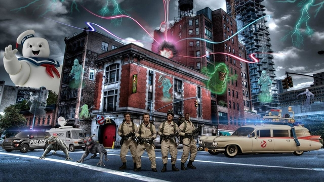

Ghostbusters, en español Los cazafantasmas, es una película estadounidense de 1984 del género comedia con algunos toques de ciencia ficción, producida y dirigida por Ivan Reitman, protagonizada por Bill Murray, Dan Aykroyd, Sigourney Weaver, Harold Ramis, Rick Moranis, Annie Potts, William Atherton y Ernie Hudson. La película fue un éxito de taquilla y se registró como la comedia más taquillera de la década. Su banda sonora fue compuesta por Elmer Bernstein. La canción "Ghostbusters" de Ray Parker Jr. ganó el premio BAFTA 1985 a la mejor canción original. En 1989 se editó, además, el álbum de la banda sonora original de la película.
